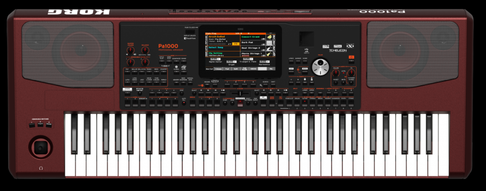

בחר את דגם האורגנית שלך מתוך הריבועים הבאים כדי לפתוח מפה אינטראקטיבית מלאה של הפאנל הקדמי והפאנל האחורי, כולל הסברים וטיפים בעברית לכל כפתור, פיידר וחיבור.
לחץ על כל כפתור בודד, פיידר, נוב או מסך על גבי האורגנית לקבלת הסבר מפורט בעברית
